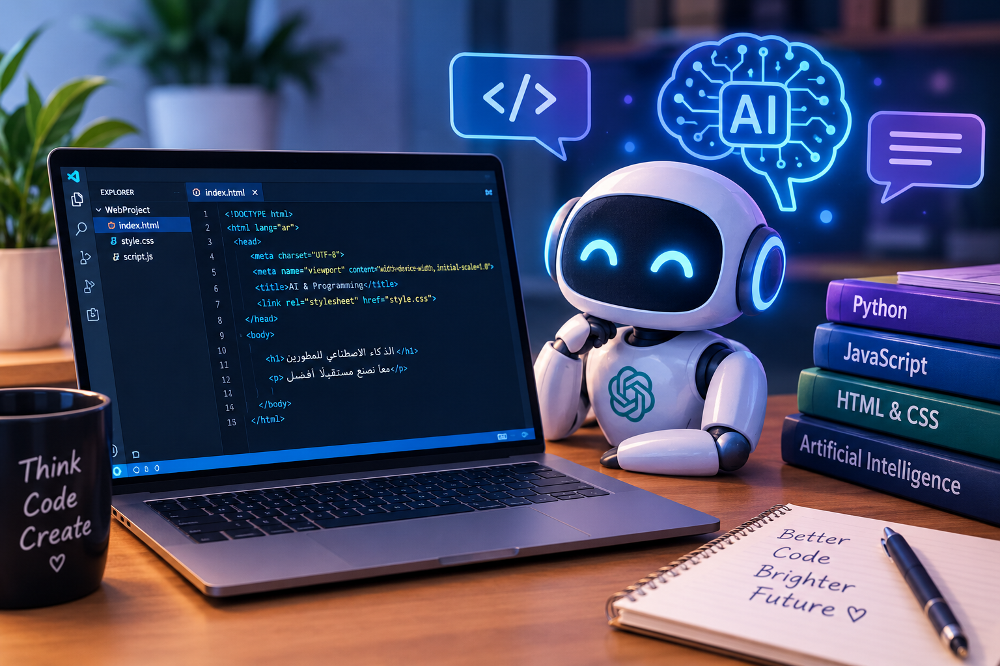

اسم الطالبة: رشا محمد على محمد على
الرقم الجامعي: 2500345
أصبح الذكاء الاصطناعي من أهم التقنيات الحديثة التي تساعد على تطوير التعليم والعمل. ومن المجالات التي استفادت منه مجال البرمجة، حيث تساعد أدوات الذكاء الاصطناعي المبتدئين على فهم الأكواد وتعلم لغات البرمجة بطريقة أسهل.
الذكاء الاصطناعي هو تقنية تساعد أجهزة الكمبيوتر على تنفيذ مهام متعددة. ويُستخدم في البرمجة لشرح الأكواد واكتشاف الأخطاء واقتراح حلول للمشكلات البرمجية.
يساعد ChatGPT المتعلمين على فهم الأكواد البرمجية خطوة بخطوة، وشرح وظيفة الأوامر، وتقديم أمثلة عملية، والمساعدة في اكتشاف الأخطاء وتصحيحها. ومع ذلك، يجب مراجعة الأكواد واختبارها لأن الإجابات قد تحتوي على أخطاء.
| وجه المقارنة | التعلم التقليدي | التعلم باستخدام ChatGPT |
|---|---|---|
| شرح الأكواد | الكتب والدروس | شرح تفاعلي وأمثلة |
| اكتشاف الأخطاء | البحث عن الخطأ | المساعدة في تحديده |
| التعلم | التدريب من المصادر المتاحة | طرح الأسئلة والحصول على شرح |

في النهاية، يساعد الذكاء الاصطناعي على تسهيل تعلم البرمجة وفهم الأكواد، لكنه لا يغني عن التفكير والتدريب العملي. لذلك يجب على المبتدئين استخدام هذه الأدوات بطريقة واعية مع التأكد من صحة المعلومات والأكواد.